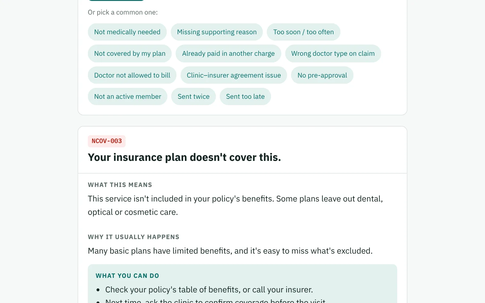

Claim Denial Decoder
Turns cryptic health insurance rejection codes into plain-English next steps for patients and clinic staff.
- Year
- 2026
- Type
- Side project
- Built for
- Patients and clinic billing teams

The problem
Rejected claims come back with short codes such as MNEC-004 that most patients, and many clinic staff, can't read. People are left confused, chase the wrong person, or pay bills they may not owe.
I handled these rejections for six years in GCC health insurance. The rules behind each code are public, but they're written for adjudicators, not for the person holding the bill.
What I built
A one-page tool. Paste a rejection code or message, or tap a common reason, and it explains the rejection in three parts.
- What the rejection means, in one or two plain sentences.
- Why it usually happens, so people know whether it's a paperwork problem or a coverage problem.
- What to do next, plus a folded note with the technical fix for clinic billing teams.
Built with: HTML, CSS, JavaScript, public payer adjudication guidelines, Claude
How I approached it
- UserPatients come first and billing teams second. The plain-language answer leads, and the coding fix sits in a fold labelled for clinic billing teams so it never crowds the patient view.
- ConstraintsRejection codes differ by market. I based the codes on UAE-style codes from Daman's public adjudication guidelines, and added free-text matching so someone outside the UAE can type the reason in their own words.
- Trade-offsI covered the 12 most common rejection reasons well rather than every code thinly. When it matches from words rather than a code, it says it's a best guess and shows each likely reason.
What it shows about me
I can turn insider claims knowledge into a product a non-expert can use without help.
Gulf Chronic Disease Watch
Separates real chronic disease trends in the Gulf from noise, using the WHO's own uncertainty ranges.